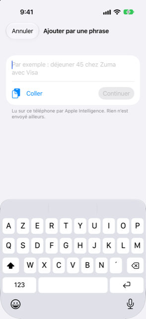

Guide › Enregistrer l’argent
Saisir une phrase
Dites ce qui s'est passé avec vos propres mots et Damla remplit le formulaire.
Tapez ce qui s'est passé — « Déjeuner 45 chez Zuma avec Visa » — et Damla le lit en un montant, un compte, une catégorie et une date. Vous vérifiez ce qu'il a trouvé et confirmez d'un seul geste. Rien n'est enregistré tant que vous ne le faites pas.
C'est un formulaire qui se remplit tout seul à partir de vos propres mots. Si Damla lit quelque chose de travers ou oublie une partie, vous terminez le reste dans le formulaire normal, en partant de ce qu'il a compris.

Quand l'utiliser
- Quand vous venez de payer quelque chose ou de recevoir de l'argent, et que vous voulez l'enregistrer sans remplir un formulaire.
- Quand vous avez reçu un message bancaire ou un e-mail parlant d'argent que Damla n'a pas attrapé automatiquement : collez-le.
- Quand vous voulez transformer un achat par carte en échéances en le disant, par exemple « paiement de l'école sur la carte Everyday, maintenant 6 mois ».
- Quand vous voulez noter une facture : un message disant qu'une facture est prête ou due, avec son montant ou une date d'échéance, est retenu comme une facture à venir.
Pas à pas
- Touchez le bouton plus sur Aujourd'hui ou Activité.
- Touchez Saisir une phrase. L'écran Ajouter par phrase s'ouvre avec le clavier prêt.
- Écrivez ce qui s'est passé avec vos propres mots, avec le montant, un nom de compte ou de carte, et une date si ce n'était pas aujourd'hui. L'exemple montré dans le champ est « Par exemple : déjeuner 45 chez Zuma avec Visa ». Vous pouvez aussi écrire un engagement, comme mettre un achat en échéances.
- Touchez Continuer. Le bouton affiche Lecture… pendant que Damla lit les mots, puis la section appelée Vérifier et enregistrer montre ce qu'il a trouvé.
- Si tout est juste, touchez Enregistrer. Si une partie manque ou n'est pas claire, Damla dit ce qu'il lui faut et propose Complétez-le, qui ouvre le formulaire avec ce qui a été compris déjà rempli. Terminez-le là et enregistrez.
Deux raccourcis :
- Coller met le presse-papiers dans le champ et le lit aussitôt, sans autre geste. C'est pour les textos ou e-mails de banque que vous avez copiés.
- Un message qui arrive depuis votre Raccourci, la feuille de partage ou la boîte de réception ouvre ce même écran déjà lu : la première chose que vous voyez est la section Vérifier et enregistrer.
Ce que vous pouvez voir dans Vérifier et enregistrer
- Un paiement ou un revenu ordinaire : le montant, les comptes entre lesquels il se déplace, le bénéficiaire et la date. Touchez Enregistrer.
- Quelque chose qui ressemble à du déjà enregistré : la section prévient « Cela ressemble à quelque chose de déjà enregistré. » et propose Enregistrer quand même. Vérifiez d'abord — payer deux fois est possible.
- Un achat transformé en échéances : la lecture montre l'échéance, le nombre de mois, la première date et les frais éventuels, avec la note « Cela crée un engagement, vérifiez-le donc. » Le bouton est Créer le plan. Cela reste une suggestion tant que vous ne le touchez pas.
- Quelque chose d'incomplet : « J’ai besoin d’un peu plus d’informations : » liste les questions, comme « Combien ? » ou « Depuis quel compte ? », et Complétez-le ouvre le formulaire.
- Un avis de facture : « Ceci est un avis de facture. » Damla le retient comme une facture attendue. Le débit de carte qui la paie plus tard est la seule vraie transaction, donc rien n'est compté deux fois.
- Un avis de relevé de carte : « Ceci est un avis de relevé de carte. » Touchez Vérifier le relevé pour le parcourir.
Si la phrase est une alerte bancaire avec les montants imprimés sous la forme habituelle, le code la lit. Seules les phrases qui ne ressemblent pas à une alerte passent par le lecteur de phrases.
Bon à savoir
Après avoir enregistré, Damla retient comment vous avez classé le bénéficiaire, si bien que le prochain message du même commerce est rangé tout seul dans cette catégorie.
En rapport
Quelque chose n’est pas clair ou manque ? Écrivez à support@raveniq.ai en indiquant la page.